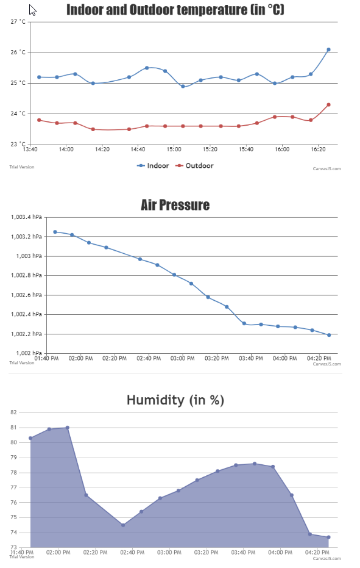

Weather station is a very popular project among those people who got started to know with microcontrollers. Everyone have their own idea to implement, so I decided to do my one. The main goal was achieve the following funcionalities:
Weather station
Outdoor and indoor unit plans
Let’s start with the outdoor unit (TX). After powered up, the unit collects temperature, humidity and barometric air pressure values into an array and sends immediately to the indoor unit through RF. After that it goes to deepSleep mode for 10 minutes. It’s important to mention that on the PCB there is “Jumper_4”. Normally there is a jumper on connector 1 and 2, it connects D0 to GND to be able to wake up from deepSleep. If you want to program the NodeMCU, you had to connect this jumper to 2 and 3, after programming back to 1 and 2. It can be powered from 3.3V or 5V on different connectors, but NOT both at the same time!
The indoor unit‘s first job is to connect to the pre-programmed WiFi network. It tries to connect 10 times, if it fails every time, the program continues without WiFi mode, so datas will not be sent to DB. In loop section first thing is to collect measured values. Indoor values, actual date/time from Real Time Clock module and outdoor values is the order. There is a check to read outdoor values, so if there is no transmission in the last 5 minutes, the display will show “NO DATA” message instead of outdoor values. After 10 minutes (and if we had incoming transmission in the last 5 minutes) the program sends measured values to DB. It calls a http GET request to a PHP file which is doing the data storage on the same server. The indoor unit can be powered from various power supplies, which is over 7.5V.
Statistic site